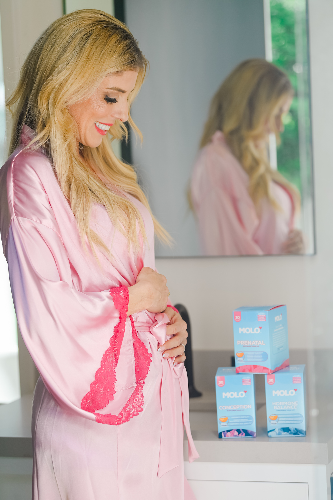

Tastes delicious ★★★★☆
“Actually tasty and not overpowering. I was pleasantly surprised.”
Molo Prenatal
Prenatal Essentials
The foundation your body draws on, started before you conceive rather than after. 600 mcg of folate in the active methylfolate form, with vitamin C, vitamin D, CoQ10 and ginger root. One drink a day, stirred into cold water.
Gets your body ready before you conceive600 mcg of folate as L-5-MTHF, the active methylfolate form, not folic acid
Built for the part before the positive1,000 mg vitamin C, 50 mcg vitamin D, CoQ10 and algal DHA
Easy to take on a difficult morningA drink, not a capsule, with 50 mg of ginger root in it. No added sugar, nothing artificial
Nurse-formulatedWritten by the Chief Nursing Officer of a fertility clinic, from the list she gives her own patients
Choose your flavor: Black Cherry
Mixing flavors is available on the 90-day plan.
Autoship & Save
90-Day Window Guarantee. Ninety days is what we ask for. If it was not easier to keep than what you were doing before, one email gets your money back. Open bag is fine.
What is in it?
600 mcg folate as L-5-MTHF, 1,000 mg vitamin C, 50 mcg vitamin D3, vitamin E, niacin, B6, B12, biotin, 4.5 mg chelated iron, 3 mg zinc, 2 g L-arginine, 50 mg CoQ10, 50 mg ginger root and 20 mg algal DHA. No proprietary blends.
Is this a complete pregnancy prenatal?
No, and we would rather say so. Molo Prenatal is built as a preconception foundation, for the months before a positive. It does not contain choline, iodine, calcium or magnesium, and its iron is 4.5 mg rather than a pregnancy dose. When you get a positive, bring this label to your OB and ask specifically about your iron and choline targets.
When and how do I take it?
One stick a day, stirred into 8 to 12 oz of cold water. Any time of day works. What matters is that you take it daily for the full ninety days.
Why is there ginger in it?
50 mg of ginger root, which is the one ingredient here with real evidence behind it for nausea. It is in the formula for the mornings when a supplement is the last thing your stomach wants, which is exactly when a routine tends to break.
Where is it made, and is it tested?
Made in the USA in a GMP-certified facility, and third-party tested for purity and potency.
Can I take this during IVF or IUI?
Bring the label to your clinic before starting anything during a treatment cycle. Molo is a supplement rather than a medical product, and your clinic’s protocol always comes first.
†These statements have not been evaluated by the Food and Drug Administration. This product is not intended to diagnose, treat, cure, or prevent any disease.

The timing
Start it while you are trying, not after.
Most women start a prenatal the week they get a positive. The neural tube closes in the first few weeks, often before a test reads positive at all, which is why folate matters in the months before conception rather than the weeks after it.
Molo Prenatal uses 600 mcg of folate as L-5-MTHF, the active methylfolate form rather than folic acid. Alongside it: 1,000 mg of vitamin C, 50 mcg of vitamin D, CoQ10, algal DHA and 50 mg of ginger root, which is in there for the mornings when a supplement is the last thing your stomach wants.
The active form, not folic acid
What is in it
Every ingredient and every amount, printed.
No proprietary blends. Turn over most prenatals and you find a blend name with one number beside it covering eight ingredients at once, which means the thing you bought it for could be a full dose or barely a trace.
This is a preconception foundation, not a complete pregnancy prenatal. It does not carry choline, iodine, calcium or magnesium. We would rather tell you that than build a completeness table that does not survive a look at the label.
Folate (L-5-MTHF) The active form, not folic acid | 600 mcg DFE |
Vitamin C Antioxidant support | 1,000 mg |
Vitamin D3 Bone, muscle and immune support | 50 mcg |
CoQ10 (Ubiquinone) Cellular energy | 50 mg |
Ginger Root In here for the difficult mornings | 50 mg |
L-Arginine Amino acid | 2 g |
Iron (ferric glycinate) Gentle, chelated. A preconception level | 4.5 mg |
DHA (algal) Vegan omega-3 | 20 mg |

This is half the routine
Prenatal covers the foundation. Ovulation covers the cycle you are in.
If you are already taking a prenatal, you are doing something right. But your cycle right now is a different job: ovulation, ovarian health, cycle regularity. Very few prenatals were ever built for any of it.
Together they are The Molo Protocol, at $49.99 a month on the 90-day plan. That is $0.67 more a day than Prenatal alone, and it saves $29.99 against buying the two separately.
Ninety days is the ask. So ninety days is the guarantee.
Open bag is fine. No return shipping. One email.